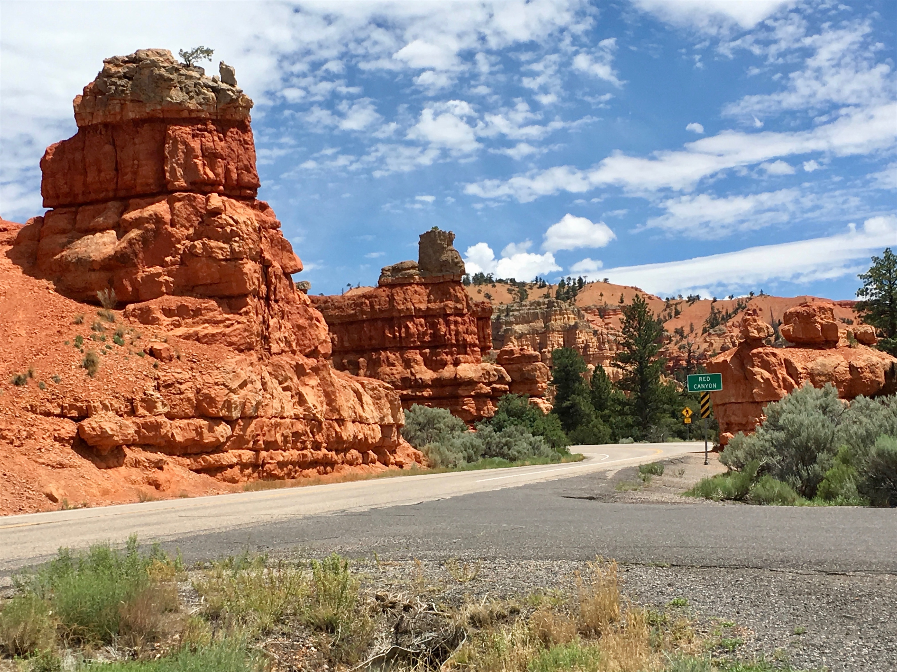
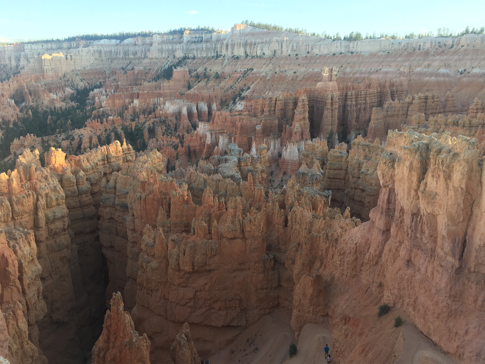
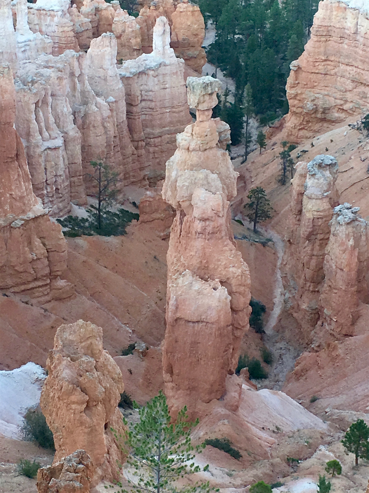
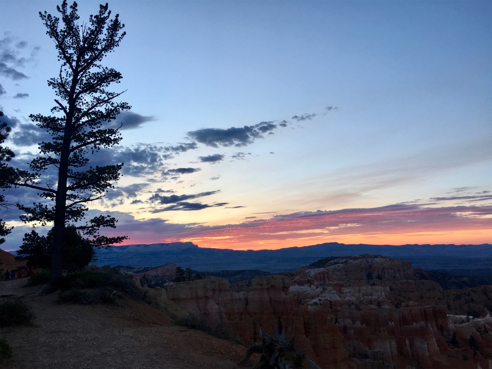
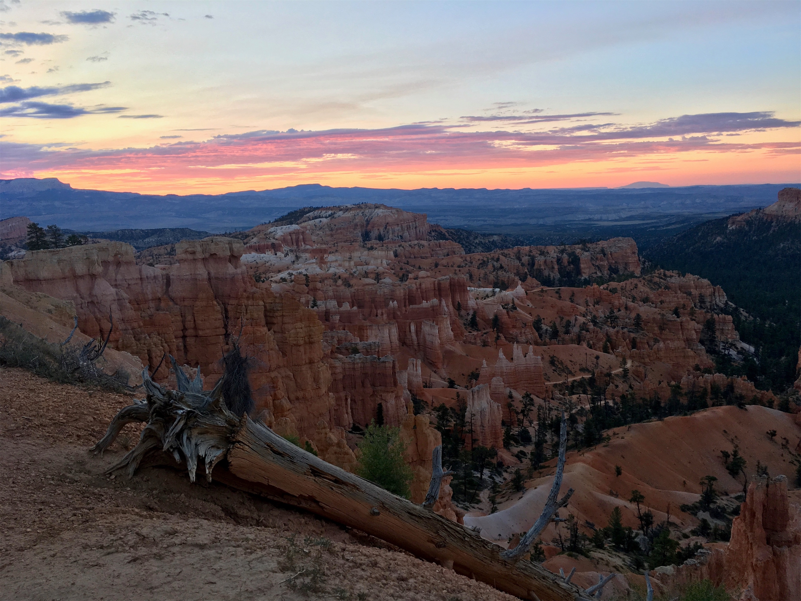
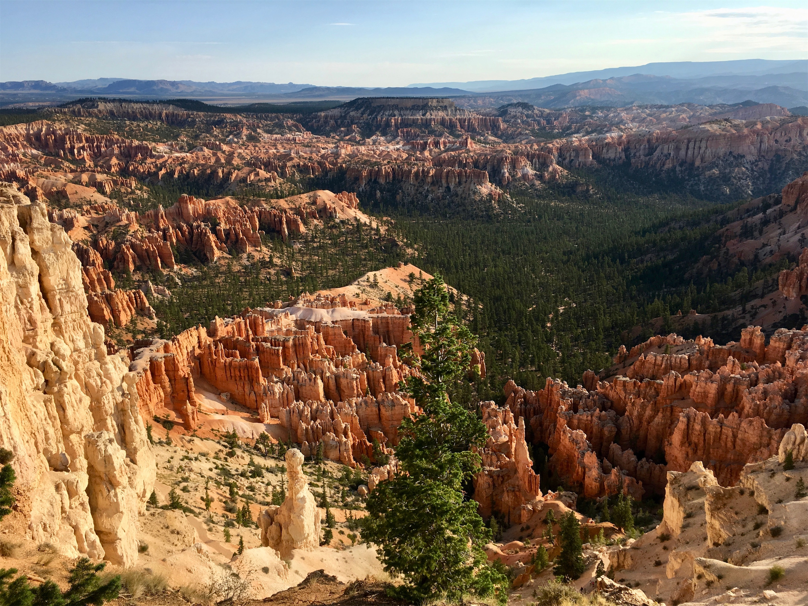
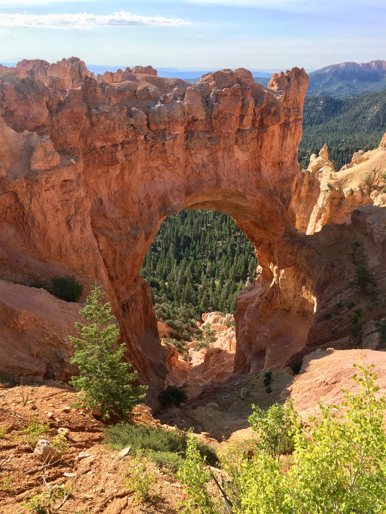
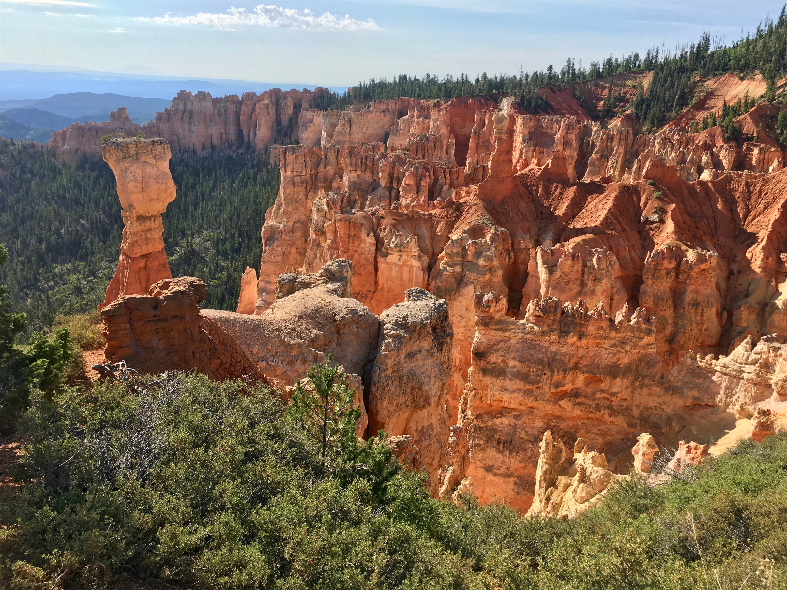
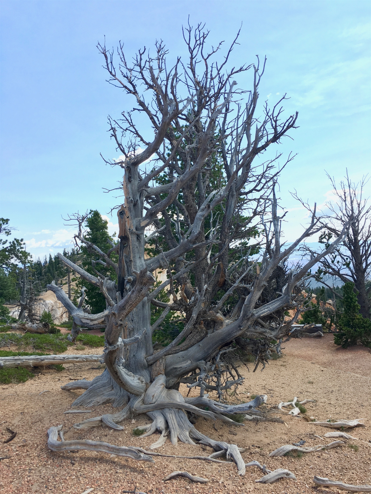
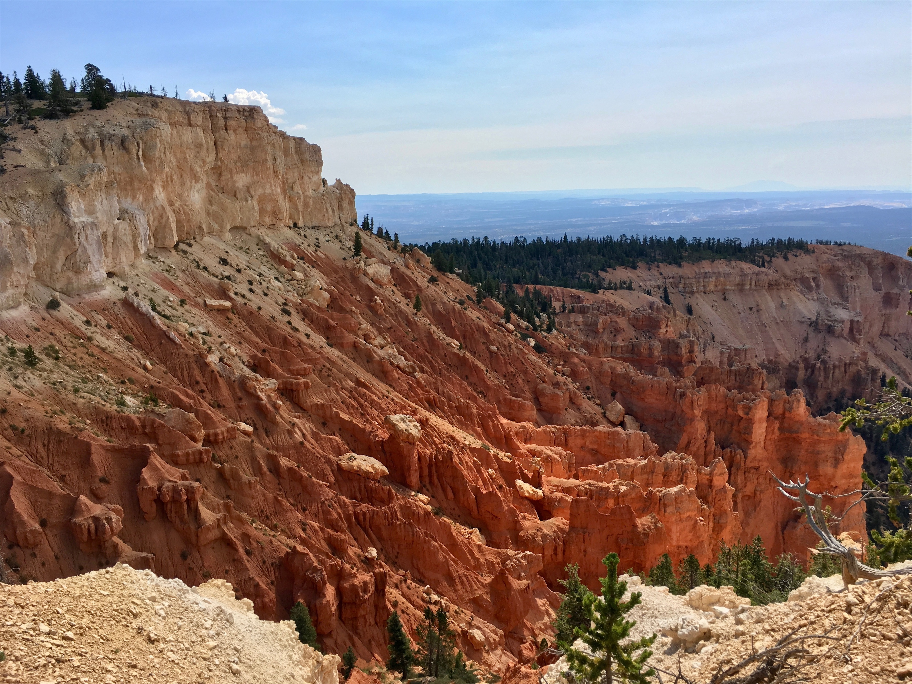

Wednesday, Jul 25, 2018, 1:19 PM MDT
Bryce Canyon National Park Visitors Center, Escalante, UT, United States
93°F Sunny
93°F Sunny
![]()
7/25 Zion Lodge, UT -> Bryce Canyon Visitors Center/Lodge, UT 87 mi, 2.5 hr
7/26 Zion Lodge, UT -> Rainbow Point (RT) 38 mi, 4 hr
Trip Total: 9,235 mi
After the 1.1-mile tunnel, we continued northeast out of Zion and as we approached Bryce Canyon, very scenic orange-colored mesas came into view. Bryce’s main feature is an amphitheater, which is like a canyon with endless spires of red-orange rock. Most people view this from the rim, about 8,000 ft up (and the 20 degree temperature drop from Zion was a welcome relief), but it is much more feasible to hike down to the bottom than the formidable Grand Canyon. The very nice lodge is a short walk from the rim, which meant that we didn’t have to deal with parking issues or take the shuttle system.
We booked so early that we got one of only four rooms in the Lodge itself. The first night, Brad went to the rim to get some sunset pictures. All the pictures don’t do the scene justice, because a 3D view is needed to see how tall, especially compared to hikers below, the spires (called hoodoos) are. Later, a ranger gave an astronomy presentation right downstairs in the lodge auditorium. Brad attended that, and also went with the ranger and group to the rim to stargaze. Bryce is yet another designated dark park. The rangers had four telescopes, and Brad saw Jupiter and its four Galilean moons, Mars, and a Butterfly Cluster through one of them. We also saw a very bright satellite, that some people think was the International Space Station (but I don’t think it was). Unfortunately, the moon was almost full, so we couldn’t see the normally-visible Milky Way.
After Brad developed the ability to wander around the rim in the dark without falling in, he woke Deb up at 5:00 AM, and led her in the total darkness from the lodge to Sunrise Point, where we joined about fifty other crazy people to watch the sunrise. The temperature was in the 50s, because of the thin air. The colors started with orange, and the clouds of a distant thunderstorm, and eventual went to pastel colors as it lit up the hoodoos. We could have spent the whole day just scanning this scene. As light came, Deb realized how close she was to the rim, with no guard, and we saw a doe and its fawn. We then made our way down the scenic drive, seemingly having the park to ourselves in the early morning, stopping at Inspiration Point, Bryce Point, Natural Bridge, Yovimpa Point, and finally the end at Rainbow Point, which was over 9,000 ft. We hiked the 1-mile Bristlecone Loop Trail. The canyon views were great, but we mostly saw dead Bristlecones, some of which are around 1700 years old. A parasite called Dwarf Mistletoe, a consequence of fire suppression, is killing them.
Overall, this park is one of our favorites for the combination of scenery, hikes, ranger programs, ability to escape the crowds, weather, and the lodge.









